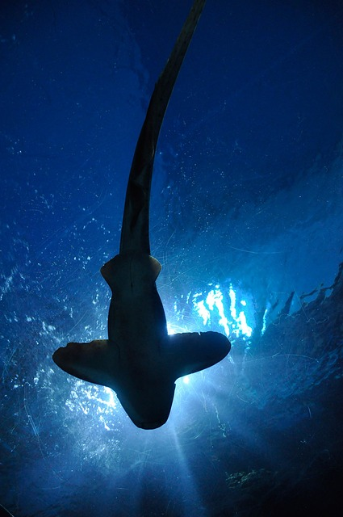
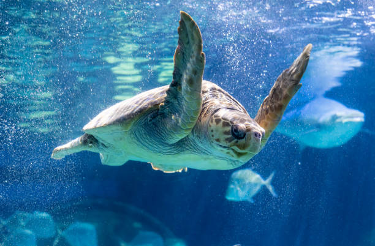
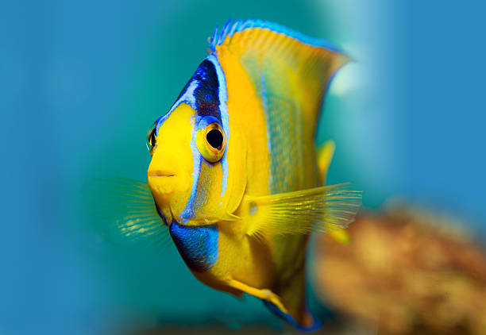
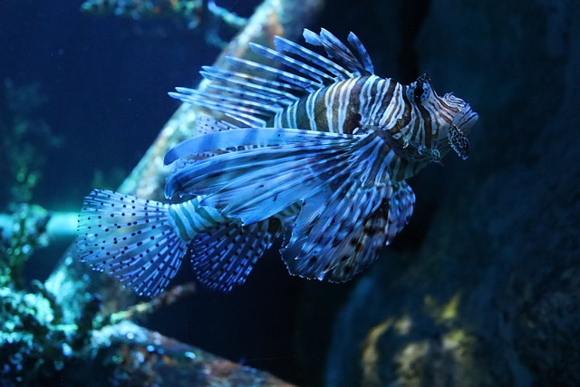
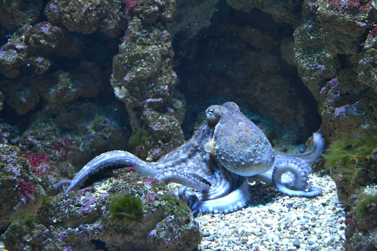

¡Conoce al PELIGROSO PEZ PIEDRA! En nuestro ACUARIO, podrás observar de cerca a este depredador mortal de los arrecifes de coral. Con su habilidad para CAMUFLARSE y su VENENO LETAL, el pez piedra es una de las criaturas más TEMIDAS del mar. ¡No te pierdas la oportunidad de conocerlo en nuestro acuario! ...
¡Descubri al misterioso PULPO DE ANILLOS AZULES! En nuestro ACUARIO, podrás maravillarte con esta criatura fascinante y mortal. Con sus brillantes ANILLOS AZULES y su VENENO POTENTE, el pulpo de anillos azules es una de las criaturas más PELIGROSAS del mar. Ven y observa su gracia mientras se desliza entre las rocas y la vegetación marina. ¡Te esperamos para una experiencia inolvidable en el mundo acuático! ...
¡Descubri la MAJESTUOSA TORTUGA MARINA! En nuestro ACUARIO, podrás maravillarte con esta criatura emblemática del océano. Con su GRANDEZA y su belleza única, la tortuga marina es uno de los tesoros del mar. ¡No te pierdas la oportunidad de conocerla en nuestro acuario!...